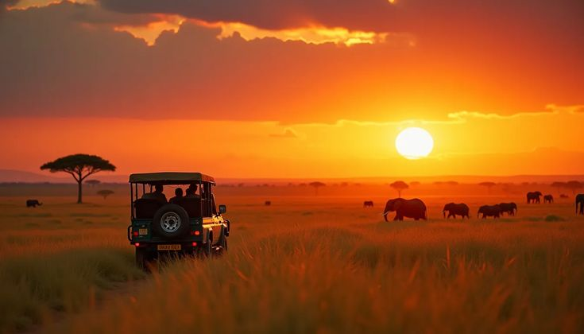

Photography-led safaris · Kenya
See the wild
in its own time.
Unhurried journeys for curious people who want to feel Kenya, not just pass through it. Come for the frame. Leave with the story.
A different kind of safari
The best sightings are rarely rushed.
Nahori Wild is a Kenya-based photography and safari company built around one simple idea: give wild places your full attention. Our guides read the light, our itineraries leave room for surprise, and our camps put you close to the landscapes that make this country unforgettable.
Meet the people behind the lensThe Mara, slowly
Big skies, big cats, and the freedom to stay with a moment.
From $1,850 ppUnder Kilimanjaro
Elephants, golden light, and Africa's most iconic silhouette.
From $1,480 ppYour wild idea
Build a route around the places and animals you dream of seeing.
Start a conversation
01 / 04Made for the frame
Travel with your eyes open.
Whether you are a working photographer or simply someone who notices beautiful things, our photo safaris are designed around observation. Private vehicles, expert naturalist guides, flexible days, and practical help with your camera when you need it.
Discover photo safarisHow many days should I plan?
Five to seven days is a lovely first safari length. It gives you time to settle into the rhythm of the bush instead of rushing between parks.
Can you tailor a safari for our group?
Yes. We shape every private journey around your dates, interests, pace, accommodation style, and budget.
Do I need to be a professional photographer?
Not at all. Our photography journeys welcome phone photographers, beginners, enthusiasts, and working professionals.
How do I reserve my safari?
Send us an enquiry or WhatsApp us on 0718 769 412. We will talk through your idea and prepare a tailored proposal.
What guests remember
“Nahori gave us something more valuable than a checklist. They gave us the time to be there.”— Amara & Joel, Nairobi
Your next chapter starts here